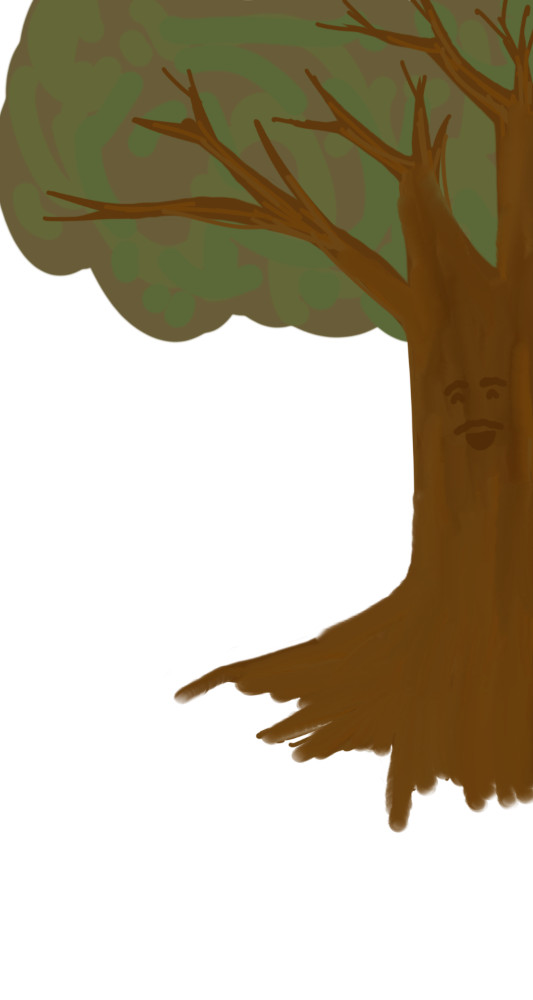

Chapters 4-6: Illustrator
On his first day of school, Victor is terrified. He clings to his mom and feels as though he isn't ready. However, he sees a patch of eucalyptus trees, and one of them covered in twists and knots. In those twists and knots, he sees a face and remembers how his mamagrande told him that trees are wise. He hears the voice of the tree telling him to be strong and brave.